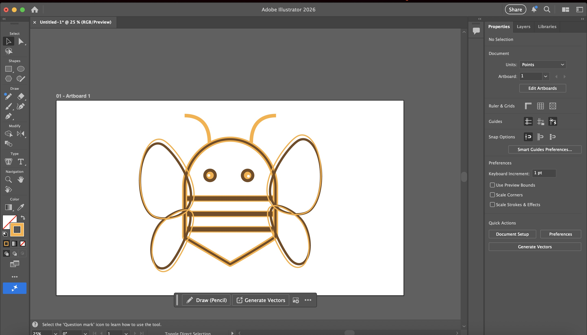
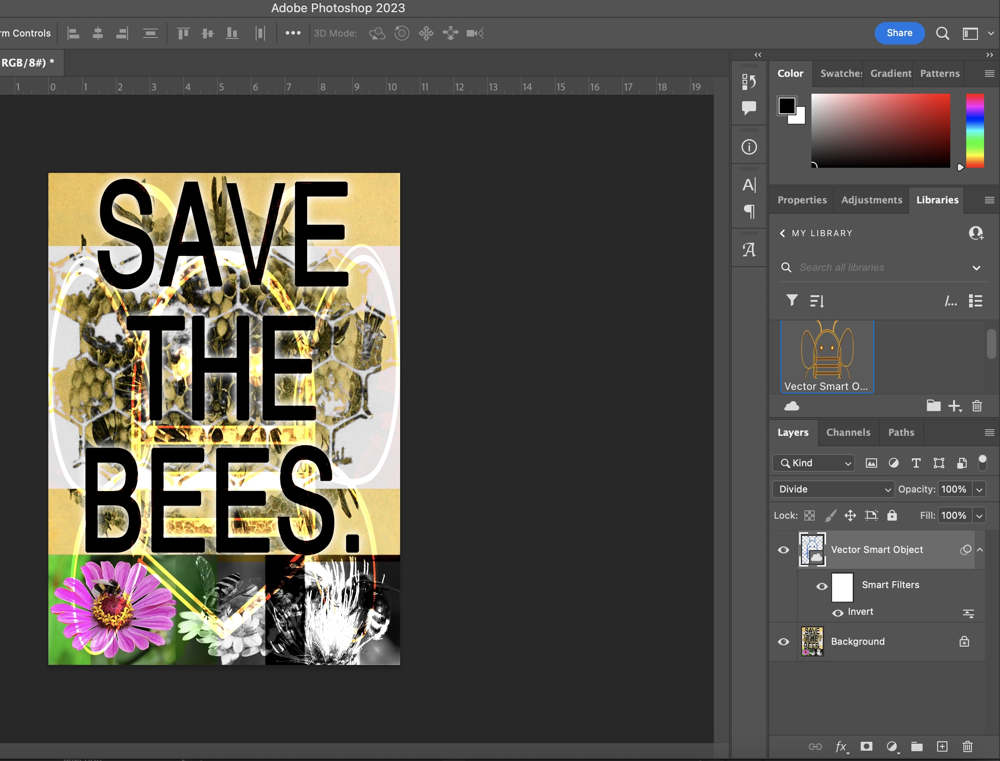
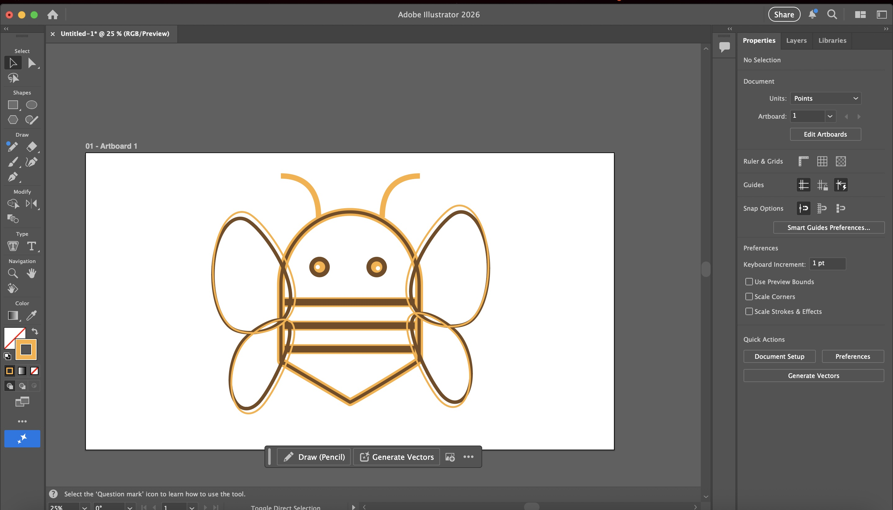
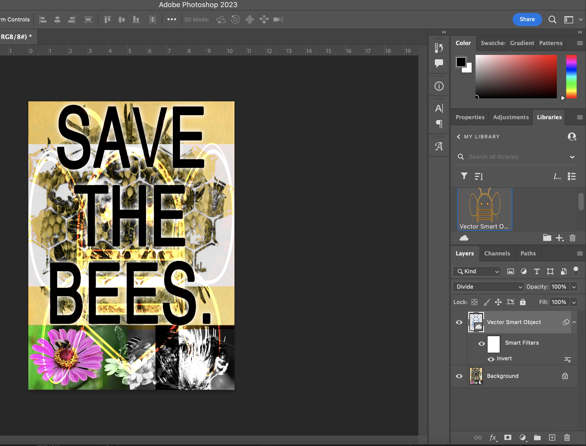

Illustrator Bee Design
 



For my ‘Save the Bees’ social campaign photo-collage, I decided to make a simple outline of a bee’s body in Adobe Illustrator and then transfer it over to Photoshop, to lay it over my entire drafted design. In Illustrator, I didn’t use much fill for my shapes, mostly just stroke to create an outline of the bee, so that the PNG would have plenty of ‘open’ space when I laid it over my collage. I wanted my vector drawing to take-up most of the page, so that maybe it could add some unity to my collage design. To make it fit, I had to horizontally stretch it, kind of distort it honestly, and even when I did overlay it with the proportions that I wanted, the image made the text on the collage kinda illegible, so I messed around with the blending modes of the smart object so that the ‘Save the Bees’ text was legible but still also very large and all-encompassing.